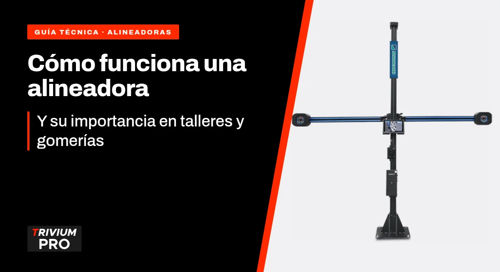

¿Cómo funciona una alineadora?
Una alineadora es una herramienta diseñada para medir y ajustar los ángulos de las ruedas de un vehículo, asegurando que estén alineadas correctamente de acuerdo con las especificaciones del fabricante. El proceso general incluye los siguientes pasos:
- Preparación del vehículo: Se coloca el auto en un elevador o plataforma para estabilizarlo y permitir un acceso completo a las ruedas.
- Colocación de sensores o reflectores: La alineadora utiliza sensores digitales o reflectores que se fijan a las ruedas. Estos dispositivos registran datos sobre la posición y el ángulo de cada rueda.
- Medición de ángulos: Los sensores capturan información sobre tres ángulos principales:
- Convergencia/divergencia: Relacionado con la orientación de las ruedas hacia adentro o hacia afuera al verlas desde arriba.
- Caída: El ángulo de inclinación de la rueda hacia adentro o hacia afuera al verla de frente.
- Avance: La inclinación del eje de dirección hacia adelante o hacia atrás.
- Cálculo y ajuste: La alineadora procesa los datos recopilados y los compara con los valores recomendados por el fabricante. Si se detectan discrepancias, el técnico realiza los ajustes necesarios en la suspensión y dirección.
- Informe final: Una vez ajustadas las ruedas, la alineadora genera un informe detallado que confirma que los ángulos están dentro de los parámetros establecidos.
No todas las alineadoras cuentan con bases de datos de vehículos completas, lo que podría afectar la precisión de la alineación. Marcas como Hofmann cuentan con las bases de datos más completas del mercado.
La importancia de una buena alineación
La alineación de ruedas no solo afecta el rendimiento del vehículo, sino también la seguridad del conductor y de los pasajeros. Aquí te mostramos algunas razones por las que este servicio es crucial:
- Mayor duración de los neumáticos: Una alineación incorrecta provoca un desgaste desigual en las ruedas, reduciendo su vida útil.
- Conducción más segura: Las ruedas desalineadas pueden dificultar el control del vehículo, especialmente en curvas o frenadas bruscas.
- Eficiencia del combustible: Cuando las ruedas no están alineadas, el vehículo necesita más energía para desplazarse, lo que aumenta el consumo de combustible.
- Reducción de costos a largo plazo: Realizar alineaciones periódicas evita problemas más graves en el sistema de suspensión y dirección.
Beneficios de contar con una alineadora en tu taller o gomería
Invertir en una alineadora moderna no solo mejora la calidad del servicio que ofreces, sino que también atrae más clientes. Aquí algunos beneficios:
- Mayor precisión: Los modelos digitales y computarizados permiten obtener resultados exactos.
- Rapidez en el servicio: Una buena alineadora reduce significativamente el tiempo necesario para completar el proceso.
- Generación de confianza: Proveer informes detallados a los clientes aumenta su confianza en tu trabajo.
En conclusión, incorporar una alineadora en tu taller o gomería es una inversión que mejora la eficiencia de tus servicios, aumenta la satisfacción de tus clientes y te posiciona como un negocio profesional y confiable.